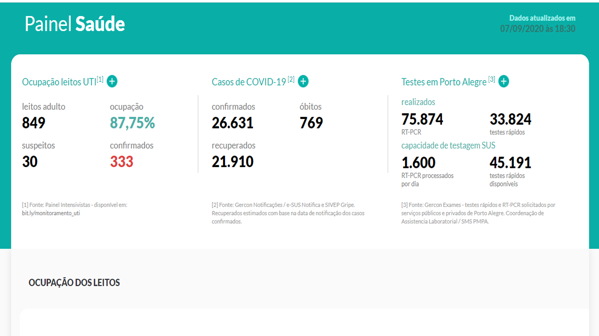

Considerando a necessidade de avaliar a ocupação geral dos leitos de UTI adulto, é relevante identificar o número de leitos ocupados por COVID-19 (confirmados + suspeitos), o número de leitos ocupados por outras causas, bem como o número de leitos livres. Ações sistemáticas implementadas previamente aumentam a disponibilidade de leitos, como a suspensão dos procedimentos eletivos, a reativação de leitos em manutenção e a conversão de outros tipos de leitos de menos complexidade em leitos de UTI. Fonte: Painel Intensivistas. Disponível em: bit.ly/monitoramento_uti
A progressão do número de casos graves pode ser avaliada mediante a série diária de pacientes internados em leitos de UTI com suspeita ou confirmados para COVID-19. As medidas de isolamento social impactam diretamente na velocidade do contágio das pessoas do grupo de risco. Fonte: Painel Intensivistas.